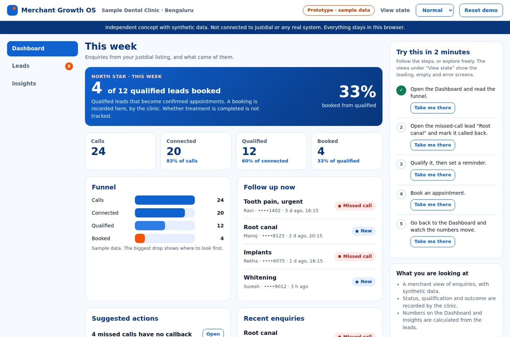
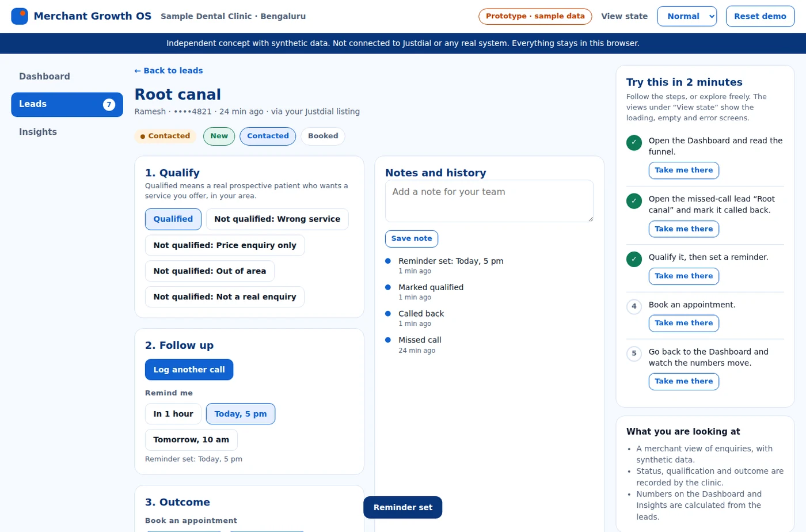
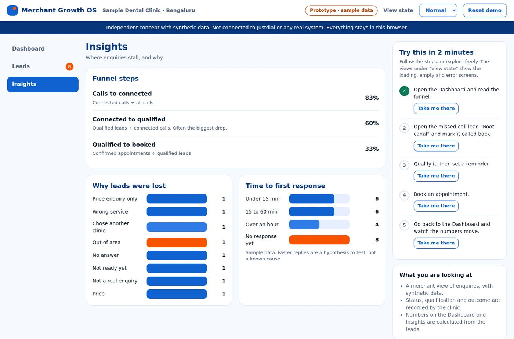

Reimagining Justdial’s merchant experience: from business listings to measurable business growth.
Role
Solo
Type
Product strategy assignment
Focus
Independent dental clinics in Bengaluru, a starting hypothesis
Deliverables
A 13-slide deck, a clickable prototype and a sample dataset
The assignment
Reimagine the merchant side of Justdial: from business listings to measurable business growth.
I treated the assignment as an independent product strategy and design exercise. It uses public information and my own analysis, with no Justdial internal data. The concept is Justdial Merchant Growth OS. The starting segment is independent dental clinics in Bengaluru, a hypothesis and not a finding.
A · From my analysis
The funnel from incoming call to completed transaction, and the metric families.
B · Public facts
Justdial’s Advertise your Business page promises 24 verified leads a month, genuine enquiries, lead and competition tracking, and ranking ahead. That is what is promised, not what clinics experience.
C · Hypotheses to validate
Enquiries lack qualification and follow-up. Clinics cannot see outcomes. Weak ROI visibility hurts renewal.
D · Illustrative numbers
The funnel and scores are hypothetical, and labelled as such.
Problem and opportunity
A lead is not the outcome a clinic pays for.
Independent dental-clinic owners and their front-desk staff in Bengaluru struggle to turn Justdial enquiries into booked appointments they can see and trust, because calls arrive without clear qualification, follow-up or outcome tracking (a hypothesis to validate), resulting in missed or low-quality leads, no clear view of what the platform delivers, and a weaker reason to keep paying.
How might we
Help a clinic see which enquiries became appointments, and act on the ones that did not.
Framings set aside
Ranking and visibility (upstream), call reliability (one step in the funnel) and price perception (a symptom of this problem).
User problem
The clinic cannot tell which calls were worth following up, or what came of them.
Business problem
If merchants cannot see outcomes, renewals and paid upgrades suffer.
Opportunity
Extend the promise from leads to measurable outcomes.
Solution hypothesis
A lead-outcome layer for merchants, with optional AI help later.
Scope and segment
Five scoping questions, and why dental clinics first.
→What does success look like? A clinic sees which enquiries became appointments.
→Geography and language? Bengaluru. Language needs to be confirmed in research.
→Which domain? Independent dental clinics first, then other local categories.
→Which device? Merchant dashboard on phone and desktop. Consumer on phone.
→Timeline? Phased, with no dates until team capacity is known.
Why start here (hypothesis)
Appointment-based, so a qualified lead and a booking are easy to define.
A front desk usually handles the calls.
Outcomes are discrete, so they can be measured.
Why it could be wrong
Not validated as the most valuable segment.
Clinic chains and groups may behave differently.
Research plan
Proposed research. None of it has been done yet.
I would ask how clinics handle enquiries today before showing any idea. Sample sizes are my proposal.
Who and how
8 to 10 clinic owners and front-desk staff in Bengaluru.
About 5 consumers who searched for a dentist.
2 or 3 Justdial sales or support staff, if access allows.
45-minute interviews about current behaviour, walking through recent enquiries.
Analysis and care
Affinity mapping: observations, then patterns, insights and opportunities.
Watch for selection bias, leading questions and social desirability.
Get consent, and collect no patient data.
Provisional personas
Three fictional personas, to validate.
Dr. Meera Rao (fictional)
Business owner
A steady flow of booked appointments, and proof that her spend works.
Booked appointmentsProof of value
Pain (hypothesis): cannot tell which Justdial calls became patients.
Kavya Nair (fictional)
Front-desk coordinator
Answer every call and book the right slots.
No missed enquiriesWho to call back
Pain (hypothesis): calls arrive at busy times, with no note on who called or why.
Arjun Shetty (fictional)
Consumer
Find a trustworthy dentist nearby who can see him soon.
TrustNearbyAvailable
Pain (hypothesis): unsure about availability, price and quality before calling.
Comfortable with smartphones, short of time, not of skill. I would validate or drop each against interview patterns.
Current-state journey
Value is visible up to the call, and may go dark afterwards.
Every friction point is a hypothesis to investigate. The orange cards mark where outcomes may disappear.
1 · Likely visible today
Business onboarding
Unclear what to fill in, and what it earns.
2 · Likely visible today
Listing creation
Incomplete or outdated details reduce trust.
3 · Likely visible today
Listing visibility
Hard to see how the listing appears in relevant searches.
4 · Likely visible today
Consumer enquiry
A call may not connect, or not be meaningful.
5 · Blind spot (hypothesis)
Lead receipt
Calls arrive with no note on who, why or how urgent.
6 · Blind spot (hypothesis)
Follow-up
Missed calls and slow replies, with no reminder.
7 · Blind spot (hypothesis)
Customer conversion
Whether a lead became an appointment is not recorded.
8 · Blind spot (hypothesis)
Performance review
No view from leads to outcomes, so value is unclear.
9 · Blind spot (hypothesis)
Subscription renewal
Renewal rests on a feeling, not on evidence.
Future state, as a proposal: the same journey, with outcomes recorded from lead receipt to review. A separate consumer journey covers search, listing evaluation, contact and completing the task.
North Star and metrics
Qualified leads that become confirmed appointments.
I compared three candidates. Qualified leads per active merchant is close to platform value, but rewards volume. Qualified leads converted to customers ties to merchant value, but the sale is often invisible. Customer outcomes attributable to Justdial is the true goal, but attribution is hard. I chose confirmed appointments from qualified leads, because the appointment is recorded in the product, so it is measurable. A completed sale stays merchant-reported.
Funnel diagnosis
Find the largest drop before redesigning anything.
Incoming calls
1,000* · 100%
Connected calls
900* · 90%
Meaningful conversations
600* · 60%
Qualified leads
200* · 20%
Confirmed appointments
80* · 8%
Completed transactions
50* · 5%
Largest relative drop: meaningful conversations to qualified leads, 200 of 600, about 33%.
* Illustrative numbers, not Justdial data.
→Define each stage and its denominator before comparing.
→Segment the drop: time of day, area, treatment, source and device.
→Ask why before designing. Is “qualified” too strict, or are the calls irrelevant?
→A pattern is a correlation until calls are reviewed or an experiment confirms the cause.
Analysis exercise
A 20% conversion decline, in a spreadsheet.
I built a small synthetic dataset to practise the diagnosis: 60 rows, six merchants and ten days. In it, Call Now conversion in one city falls by about 19% after day five, while the other city stays flat. It shows why I segment first: the overall number hides where the decline sits. The data is synthetic, not Justdial’s.
To investigate: compare before and after by segment, check for changes in tracking or listings on the same dates, then review the calls. Finding where the decline sits is not the same as finding why.
Opportunities and MVP
Lead management first.
Four connected modules, scored illustratively. Scores support judgement, they do not replace it.
Module
Reach
Impact
Confidence
Effort
Score
A · Merchant growth dashboard
8
1
70%
3
1.9
B · Lead management
8
2
60%
4
2.4
C · AI Smart Assist
4
3
30%
8
0.5
D · Growth recommendations
8
1
40%
2
1.6
The smallest viable MVP
Capture every enquiry as a lead.
Mark it qualified or not, with a lost reason.
Follow-up reminders.
Record the outcome: appointment confirmed.
A lean funnel view.
Deferred, and why
AI Smart Assist needs data first, and carries cost and risk.
Recommendations need history to be useful.
Reach 1 to 10, impact 0.5 to 3, confidence in percent, effort in person-months.
MVP experience
Three screens carry the MVP.
The dashboard avoids metrics that do not help a merchant decide something. Each screen is specified for its goal, primary action and states.

DashboardThe North Star, the funnel, who to follow up now, and suggested actions. Sample data.

Lead detailQualify, follow up and record the outcome in one place. Sample data.

InsightsFunnel step conversions, why leads were lost, and time to first response. Sample data.
Screen
User goal
Primary action
Other states
Dashboard
See what came of this week’s enquiries.
Open a lead to follow up.
Loading skeleton, empty guidance, error with retry.
Leads
Find an enquiry and its status.
Open the lead.
No-match message, filters, search.
Lead detail
Qualify, follow up and record the outcome.
Call back or book.
Disabled actions explain why.
Insights
Understand where enquiries stall.
Open the biggest drop.
Empty and error states.
Try the prototype
A clickable prototype with synthetic data.
Follow the guided demo on the right: call back the missed lead, qualify it, book an appointment, and watch the dashboard and North Star update. Use “View state” to preview the loading, empty and error screens. It is an independent concept and is not connected to Justdial.
Missed-call follow-up and call summaries first, with a person confirming bookings.
Intent accuracyTask completionHandoffCost per lead
→Weights differ by search. An emergency leans on proximity and availability, a specialist on quality and reviews.
→Measure outcomes, not clicks. Offline: NDCG on labelled queries. Online: successful outcomes.
→Keep sponsored placement labelled and separate from organic relevance.
→Model confidence is not accuracy. A person confirms bookings, and no outbound calls go out without consent.
Monetisation and experiments
Test willingness to pay. Do not assume it.
These are hypotheses, not Justdial’s pricing. Free: the lead log and funnel view. Paid: advanced analytics and follow-up workflows, as a subscription. Add-on: an AI receptionist, priced by usage. I would test willingness to pay with pricing interviews, a fake-door test and a paid pilot, not by counting features. Contribution is revenue minus telephony, AI and support costs. Lifetime value is monthly contribution times months retained.
Experiment
Design
Guardrails
1 · Listing-to-call conversion
Randomise by user. Primary: Call Now rate.
Qualified lead per call
2 · Structured lead tracking
Randomise by merchant, because it changes their whole workflow. Primary: confirmed appointments per active merchant.
Complaints, response time
3 · AI missed-call follow-up
Merchants with missed calls. Primary: qualified leads recovered per missed call.
Opt-outs, wrong messages
No results exist. Sample sizes need baseline rates and variance.
Roadmap
Six phases, each with an exit criterion.
Phase 0 · Research and validation
Exit: problem confirmed or reframed.
Phase 1 · MVP design and instrumentation
Exit: events tracked reliably.
Phase 2 · Dashboard and lead management
Exit: merchants use it weekly.
Phase 3 · Experimentation
Exit: a clear result per test.
Phase 4 · Optional AI Smart Assist
Exit: quality bars met.
Phase 5 · Retention and expansion
Exit: retention effect shown.
I used exit criteria instead of dates, because dates depend on team capacity.
Risks and limits
What could go wrong, and what I have not done.
Risk
Response
Missing or wrong data
Instrument first, then audit.
Low adoption
One-tap capture, built around the front desk.
Attribution gaps
Label merchant-reported outcomes.
Optimising for clicks
Outcome metrics and guardrails.
Limits
No real research yet. Personas are provisional.
Every number is illustrative or synthetic.
Public information only. Nothing here reflects Justdial’s internal systems.